library(shiny)
# Define UI for application
ui <- fluidPage(
## Stuff for defining user-interface
## e.g. Title,
## Table of contents
## Location of inputs (sliders and buttons)
)
# Define server logic
server <- function(input, output) {
## Stuff for running R code
## e.g. Run a linear model.
## Manipulate a data frame
## Make a plot.
}
# Run the application
shinyApp(ui = ui, server = server)The Basics of Shiny Apps
Learning Objectives
- Learn the basics of Shiny Apps.
- Chapters 1 through 3 of Mastering Shiny.
- Most content discretely stolen from Hadley’s book.
- Shiny Cheatsheet.
- Optional Resources
Motivation
As a data scientist, you will collaborate with researchers / managers / customers who do not know R.
You either want them to explore the data themselves, or you want to interactively explore the data together.
Shiny lets you build an app that will run R using a graphical user interface. You write shiny apps in R.
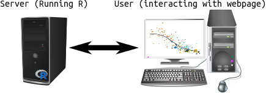
Folks showcase some pretty sophisticated interactive data visualizations: https://shiny.rstudio.com/gallery/.
This can all be accomplished without learning HTML, CSS, or JavaScript.
Format of a Shiny App.
All code for shiny apps lives in a file called “app.R”.
The format of every app.R file looks like this:
The elements of this file are:
- We first load the shiny library.
- Then we define the user interface using the
fluidPage()function. We save the output of this function to some variable (calleduiabove).- The user interface defines things like page layout (title, headers, table of contents), and sources of input (number sliders and buttons)
- Then we define the server function which will run R code using the input you obtain from the user interface.
- This is just regular R code wrapped in some special Shiny functions. You can manipulate data frames, fit statistical models, or make plots.
- Finally, we call the
shinyApp()function, telling it what objects we defined as the user interface and the server function.
Your First Shiny App
You can create a basic Shiny app by clicking “Shiny Web App…”:
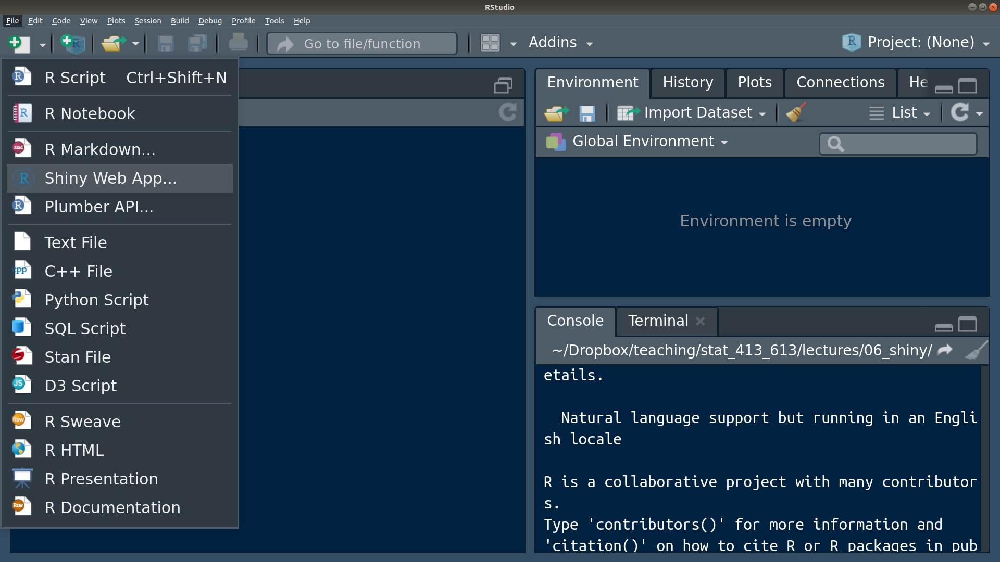
A prompt will begin asking for the application name. The name needs to follow the conventions of variable naming and will create a new directory in the directory that you specify. Let’s call our shiny app “my_first_app”.
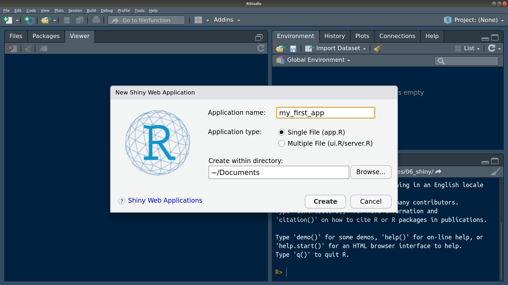
R Studio provides a nice template which should look like this:
# # This is a Shiny web application. You can run the application by clicking # the 'Run App' button above. # # Find out more about building applications with Shiny here: # # http://shiny.rstudio.com/ # library(shiny) # Define UI for application that draws a histogram ui <- fluidPage( # Application title titlePanel("Old Faithful Geyser Data"), # Sidebar with a slider input for number of bins sidebarLayout( sidebarPanel( sliderInput("bins", "Number of bins:", min = 1, max = 50, value = 30) ), # Show a plot of the generated distribution mainPanel( plotOutput("distPlot") ) ) ) # Define server logic required to draw a histogram server <- function(input, output) { output$distPlot <- renderPlot({ # generate bins based on input$bins from ui.R x <- faithful[, 2] bins <- seq(min(x), max(x), length.out = input$bins + 1) # draw the histogram with the specified number of bins hist(x, breaks = bins, col = 'darkgray', border = 'white') }) } # Run the application shinyApp(ui = ui, server = server)With this app.R file open, click on “Run App” at the top right of your text panel.
Notice that your console is busy. You cannot run R code in the console while the Shiny App is running.
It should say something like “
Listening on http://127.0.0.1:4489”, but the url will be different. You can put that URL into your web browser and see the running Shiny App.- Don’t worry, it’s still on your computer. The URL just points to a location on your machine.
Exit out of the Shiny App by
- Clicking the stop sign on your console.
- Hitting CTRL + C while you are in the console.
- Closing the Shiny App window.
Input UI Elements
In this section we’ll describe how to format the user interface. This is the stuff that goes within the
fluidPage()call.To do this, start up a new app called “
tryouts” and make it bare-bones:library(shiny) ui <- fluidPage( ) server <- function(input, output, session) { } shinyApp(ui, server)The above code “snippet” will we be populated if you start typing “shinyapp” in R Studio and select it from the auto-complete list.
I would recommend using the above as a template for all future Shiny apps. It is the minimal amount of coded needed to start a Shiny app.
Running this app should just produce a blank HTML page.
You place function calls within
fluidPage(), with each call separated by a comma.The most basic arguments are calls for input functions, such as
sliderInput(),selectInput(),textInput(), andnumericInput().Each of these input calls take at least three arguments:
inputId: The name of the input. Theserver()function will access user inputs throughinputId, so it needs to follow the conventions of variable naming.label: The name displayed on the web-app to the user.value: A default input.
Each input function will also take many more arguments specific to that type of input.
Text Inputs
Use
textInput()to collect one line of text.Use
passwordInput()to collect one line of text which is not displayed on the screen as it is entered.
- NOTE: This is not a secure way to collect passwords by itself.
Use
textAreaInput()to collect multiple lines of text.Add this element to your
tryoutsapp:library(shiny) ui <- fluidPage( textInput("name", "What's your name?"), passwordInput("password", "What's your password?"), textAreaInput("story", "Tell me about yourself") ) server <- function(input, output) { } shinyApp(ui = ui, server = server)Running the app, you should get something like this:
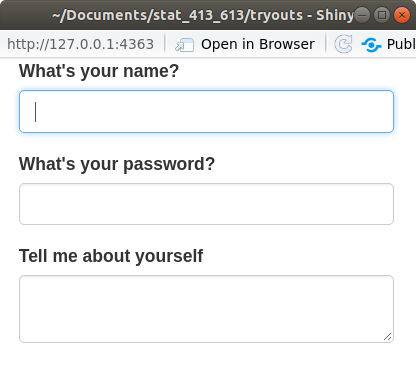
Later on, we’ll demonstrate how to access these inputs in the
server()function.Exercise: Change the
widthandheightarguments intextAreaInput(). What does it do?Exercise: Change the
valueargument intextInput(). What does it do?
Numeric Inputs
Use
numericInput()to create a text box that only accepts numeric values.Use
sliderInput()to create a number slider.- Giving the
valueargument one number will result in a one-sided slider. - Giving the
valueargument a vector of two numbers will result in a two-sided slider.
library(shiny) ui <- fluidPage( numericInput("num", "Number one", value = 0, min = 0, max = 100), sliderInput("num2", "Number two", value = 50, min = 0, max = 100), sliderInput("rng", "Range", value = c(10, 20), min = 0, max = 100) ) server <- function(input, output) { } shinyApp(ui = ui, server = server)- Giving the
Running the app, you should get something like this:
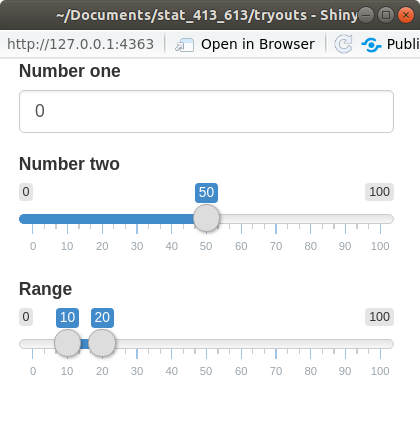
Only use sliders for small ranges where the exact number is not important.
Exercise: What does the
animateoption do when you set it toTRUE?You can see more on sliders at https://shiny.rstudio.com/articles/sliders.html.
Date Inputs
Use
dateInput()to collect a single date.Use
dateRangeInput()to collect two dates.library(shiny) ui <- fluidPage( dateInput("dob", "When were you born?"), dateRangeInput("holiday", "When do you want to go on vacation next?") ) server <- function(input, output) { } shinyApp(ui = ui, server = server)Running the app, you should get something like this:
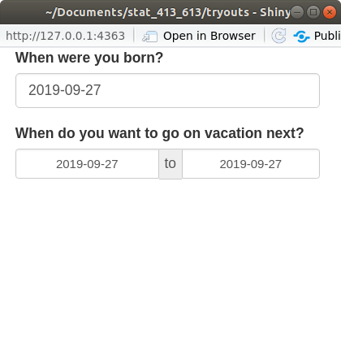
Exercise: In
dateInput(), try to disable the selection of Sundays, Mondays, Fridays, and Saturdays.
Multiple Choice
Use
selectInput()to provide the user with a drop-down menu.Use
radioButtons()to have a multiple choice button selection where only selection is possible.Use
checkboxGroupInput()to have a multiple choice button selection where multiple selections are possible.library(shiny) weekdays <- c("Sun", "Mon", "Tue", "Wed", "Thu", "Fri", "Sat") ui <- fluidPage( selectInput("state", "Where do you live?", choices = state.name), radioButtons("weekday", "What's your favorite day of the week?", choices = weekdays), checkboxGroupInput("weekday2", "What days do you work?", choices = weekdays) ) server <- function(input, output) { } shinyApp(ui = ui, server = server)Running the app, you should get something like this:
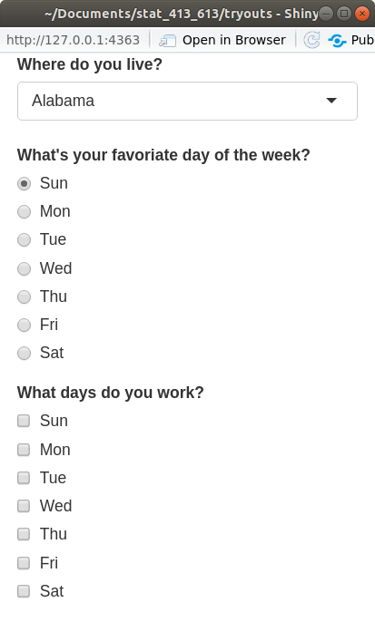
Exercise: What does
multiple = TRUEdo in inselectInput()?
Columns of a Data Frame
For a data frame named
df, just useselectInput(), with thechoices = names(df)option.library(shiny) ui <- fluidPage( selectInput("carcol", "Which Column?", choices = names(mtcars)) ) server <- function(input, output) { } shinyApp(ui = ui, server = server)Running the app, you should get something like this:
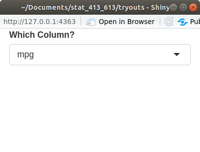
Exercise: What does the
selectedargument do? Change it.
Binary Inputs
Use
checkboxInput()to get aTRUE/FALSEor Yes/No answer.library(shiny) ui <- fluidPage( checkboxInput("startrek", "Like Star Trek?") ) server <- function(input, output) { } shinyApp(ui = ui, server = server)Running the app, you should get something like this:
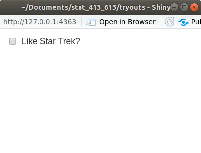
Exercise: What are the possible values for the
valueargument? Change it.It can be either
TRUE(so the box is checked) orFALSE(so the box is unchecked).
File Inputs
Use
fileInput()to have a user input a file name.Running the app, you should get something like this:
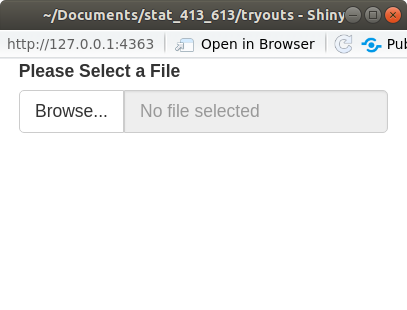
Exercise: What does the
buttonLabelargument do? Change it.
Output UI Elements
Output functions are placeholders for things created in the
server()function (like plots and tables).Each output function has a label as its first argument. The
server()can access this element as an element of theoutputlist.- For example, if the label is
"plot", then the server function can insert a plot intooutput$plot.
- For example, if the label is
Each output function in the UI is associated with a render function in the
servor().- A render function basically creates HTML code given an expression.
- An expression is just R code surrounded by curly braces
{}.
Text Output
Use
textOutput()to display text.Use
verbatimTextOutput()to display code.You create text in the
server()function by eitherrenderText()orrenderPrint().renderText()will display text returned by code. Functions can only return one thing.renderPrint()will display text printed by code. Functions can print multiple things.library(shiny) ui <- fluidPage( textOutput("text"), verbatimTextOutput("code") ) server <- function(input, output, session) { output$text <- renderText({ "Hello World!" }) output$code <- renderPrint({ summary(c(1, 2, 3, 4)) }) } shinyApp(ui = ui, server = server)Running the app, you should get something like this:
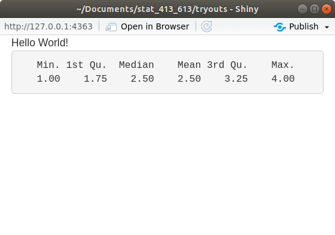
Exercise: Change the label from “text” to something else. Make sure the Shiny App still works.
Output Tables
Use
tableOutput()to print an entire table created in the server byrenderTable().- Should only be used for small tables.
library(shiny) ui <- fluidPage( tableOutput("static") ) server <- function(input, output, session) { output$static <- renderTable({ head(mtcars) }) } shinyApp(ui = ui, server = server)Running the app, you should get something like this:
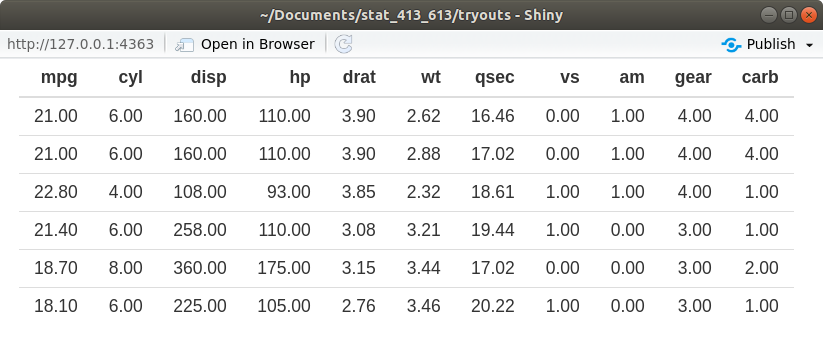
Use
dataTableOutput()to output a dynamic table created in the server byrenderDataTable().library(shiny) ui <- fluidPage( dataTableOutput("dynamic") ) server <- function(input, output, session) { output$dynamic <- renderDataTable({ mtcars }) } shinyApp(ui = ui, server = server)Running the app, you should get something like this:
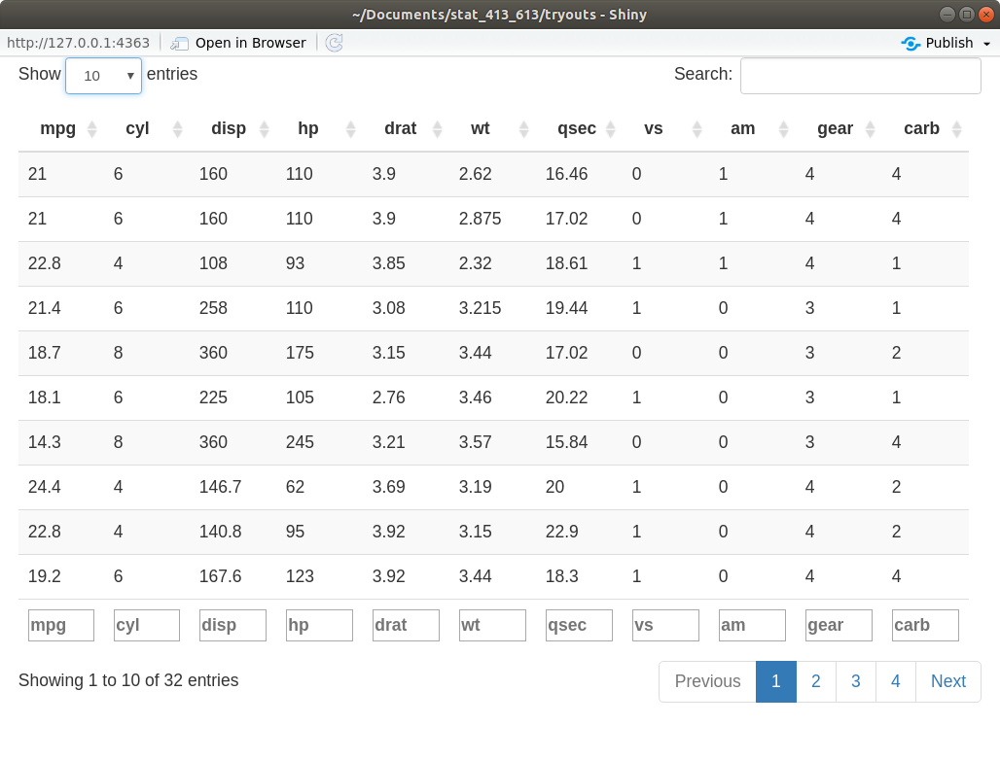
You can change the appearance of
dataTableOutput()by passing arguments as a list to theoptionsargument inrenderDataTable().- You can find these options at: https://datatables.net/reference/option/
renderDataTable({ mtcars }, options = list(pageLength = 5))
Output Plots
Use
plotOutput()to output plots created byrenderPlot()in theserver()function.library(shiny) library(ggplot2) ui <- fluidPage( plotOutput("plot") ) server <- function(input, output, session) { output$plot <- renderPlot({ ggplot(mpg, aes(x = displ, y = hwy)) + geom_point() + theme_bw() + xlab("Displacement") + ylab("Highway MPG") }) } shinyApp(ui = ui, server = server)Running the app, you should get something like this:
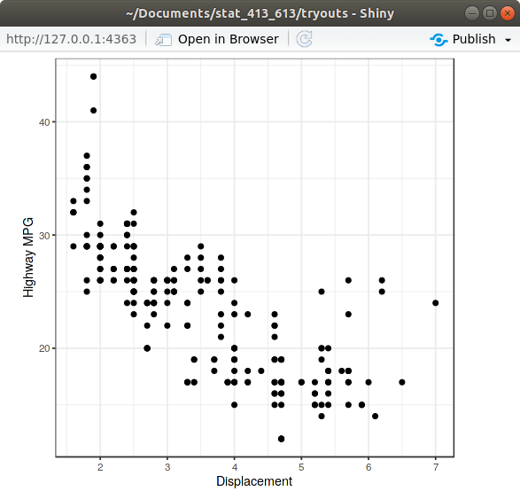
Exercise: Change the height and width of the plot by changing the argument values in
renderPlot().Exercise: Change the height and width of the plot by changing the argument values in
plotOutput().
ggplot2 and non-standard evaluation
Why won’t the following code work?
data("mtcars") myvariable <- "mpg" ggplot(mtcars, aes(x = myvariable)) + geom_histogram()What we are trying to do is make a histogram of
mpg. But whatggplot2things we want to do is make a histogram ofmyvariable. But there is not variable calledmyvariablein themtcarsdata frame!That is,
ggplot2does not know thatmyvariablehas as a value"mpg". It just looks for a variable literally called “myvariable”.This is called non-standard evaluation, where we don’t use the value of a variable (
"mpg"), but we use the variable name itself (myvariable).This “data masking” is useful because you don’t need quotes around everything, but it makes writing shiny apps (letting a user choose a variable to plot) a little more difficult.
To overcome this, use the
.dataobject that you subset usingmyvariableand double brackets[[]].data("mtcars") myvariable <- "mpg" ggplot(mtcars, aes(x = .data[[myvariable]])) + geom_histogram()In Shiny, you only need to use the
.dataobject when interacting with a variable in the tidyverse functions (e.g.mutate(),filter(),summarize(),ggplot(), etc…).
Putting Inputs and Outputs Together
Let’s build a very simple shiny app that let’s the user choose two variables from
mtcarsand then plots them.library(shiny) library(ggplot2) ui <- fluidPage( selectInput("var1", "Variable 1", choices = names(mtcars)), selectInput("var2", "Variable 2", choices = names(mtcars)), plotOutput("plot") ) server <- function(input, output) { output$plot <- renderPlot({ ggplot(mtcars, aes(x = .data[[input$var1]], y = .data[[input$var2]])) + geom_point() }) } shinyApp(ui = ui, server = server)Running the app, you should get something like this:
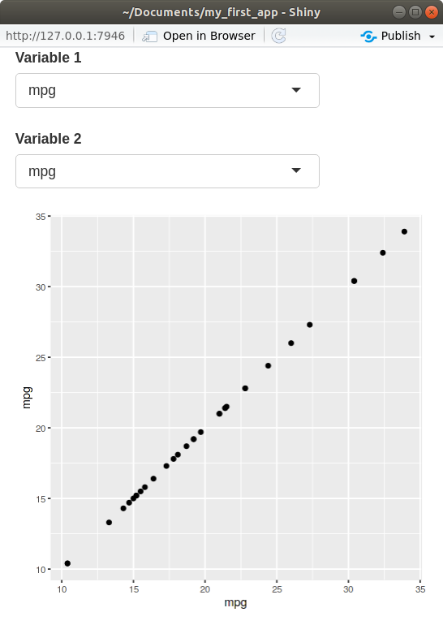
In the
server()function, notice that we accessed the inputs via theinputvariable.- These inputs must be used inside a render function in order to obtain reactivity.
In the
server()function, notice that we set the outputs to theoutput()variable.Notice that I used the
.data, subsetted usinginput$var1andinput$var2. You have to do this to use variable names in the tidyverse (ggplot,dplyr,tidyr, etc).Exercise: Let the user choose whether they want red points or blue points.
Exercise: Create a shiny app that will plot a histogram of the the variable of the user’s choosing from
mtcars. The user should also be able to select (i) the number of bins, (ii) the fill color of the bins (either"red"or"black") and (iii) the theme of the plot (eithertheme_bw()ortheme_dark()).
Alternative pipeline to .data
You can use
selectInput()for variable selection, in which case you can use the.dataobject.But if you use
varSelectInput(), you need to use!!.library(shiny) library(ggplot2) ui <- fluidPage( varSelectInput("var1", "Variable 1", data = mtcars), varSelectInput("var2", "Variable 2", data = mtcars), plotOutput("plot") ) server <- function(input, output) { output$plot <- renderPlot({ ggplot(mtcars, aes(x = !!input$var1, y = !!input$var2)) + geom_point() }) } shinyApp(ui = ui, server = server)Compare UI:
- Way 1:
varSelectInput("var1", "Variable 1", data = mtcars) - Way 2:
selectInput("var1", "Variable 1", choices = names(mtcars))
- Way 1:
Compare Server:
- Way 1:
x = !!input$var1 - Way 2:
x = .data[[input$var1]]
- Way 1:
Exercise: Create a Shiny app that will take as input
- A column from
mtcars - A numeric value
and it will print out an interactive table containing just the rows from
mtcarsthat have a value of the selected variable above the provided numeric value. For example, if the user selectsmpgas the column and30as the numeric value, then the code that would effectively be run would be:mtcars |> filter(mpg > 30)- A column from